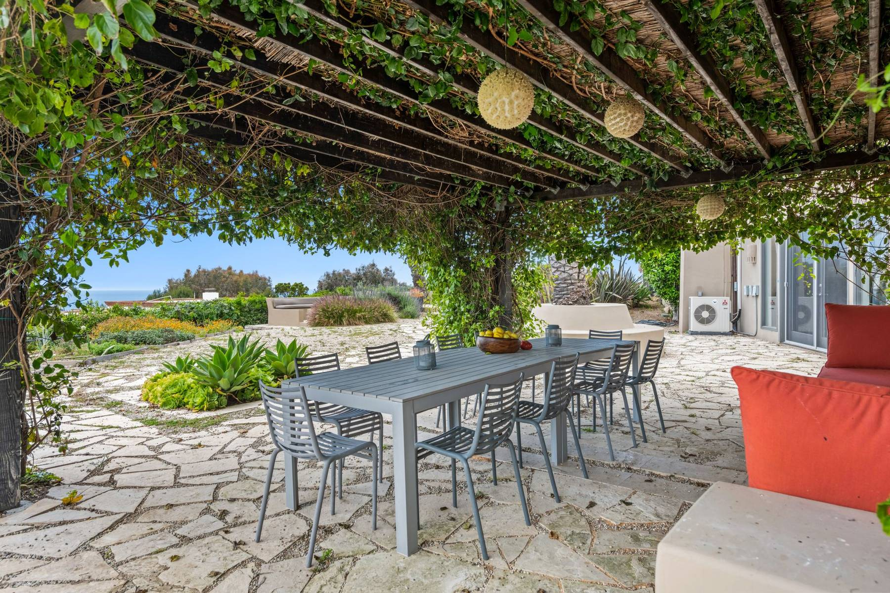

High Point, NC · Masonry & hardscapes
Stone that holds. Yards that last.
Patios, walls, walkways, and fire features built for Piedmont weather — and handed over clean.
-
Licensed & insured
Sample credentials for this portfolio site, not a real license.
-
Local to the Triad
Based in High Point. We work Guilford, Forsyth, and nearby yards.
-
Written estimates
We walk the site, then send a clear scope and price before we start.
-
Clean job sites
We protect the house, haul our debris, and leave the yard ready to use.
What we build
Masonry you can live with
From a backyard patio to a wall that holds a slope, we build in brick, block, and natural stone — and we finish the details that make it last.

Patios & outdoor living
Flagstone, pavers, and brick patios with a base and drainage plan that can take a High Point summer.
See patio work
Masonry & veneer
Brick, stone veneer, fireplace surrounds, steps, and repair work that matches what is already there.
See masonry work
Walls, walks & steps
Retaining walls, walkways, and stairs built to hold grade and give you a clear path through the yard.
See hardscape workRecent work
Yards we have finished
A few sample projects from the gallery. These photos are licensed stock, used here to show how a finished contractor site can look.


Ready to talk about the yard?
Call us or send a few photos. We will walk the site and send a written estimate — no charge, and no hard sell.